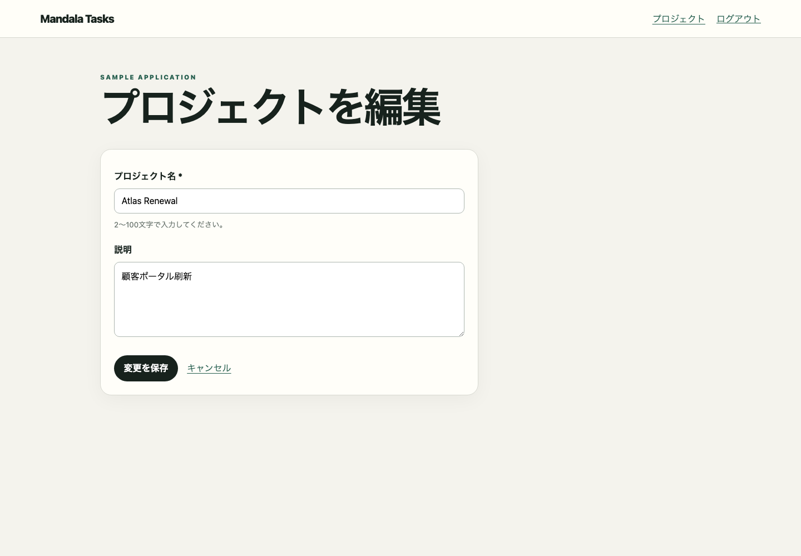
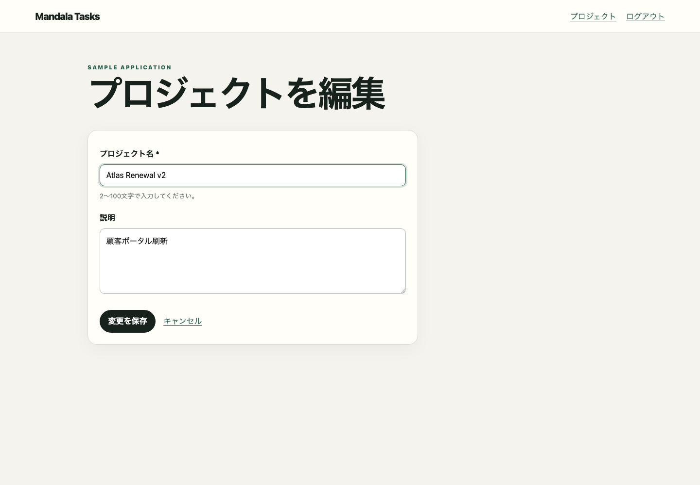

Deterministic Playwright capture for project-update
{}
mandala/snapshots/ui/project-update.jsonscreen-state:/projects/{id}/edit:normal.project-updateObserved normal screen state at /projects/{id}/edit


{colorScheme=light, featureFlags={}, locale=ja-JP, role=ADMIN, time=2026-01-15T03:00:00.000Z, timezone=Asia/Tokyo, viewport={height=1000, width=1440}}/projects/{id}/editproject-updatenormal{}
mandala/snapshots/ui/project-update.json